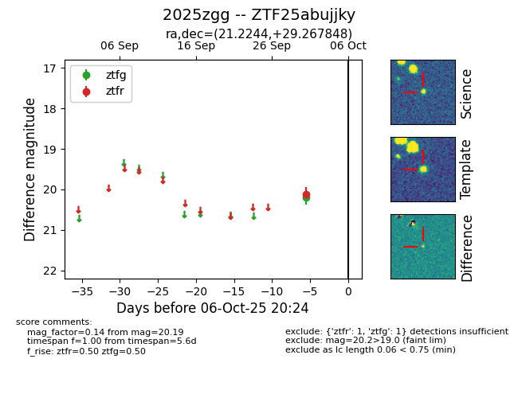

FINK: ZTF25abujjky
Lasair: ZTF25abujjky
ALeRCE: ZTF25abujjky
TNS: 2025zgg
YSE: 2025zgg
ZTF25abujjky (ztf,fink)
2025zgg (tns,yse)
equatorial (ra, dec) = (21.2244,+29.26785)
galactic (l, b) = (131.6390,-33.03756)

last ztfg=20.19, ztfr=20.12
1 ztfg, 1 ztfr detections